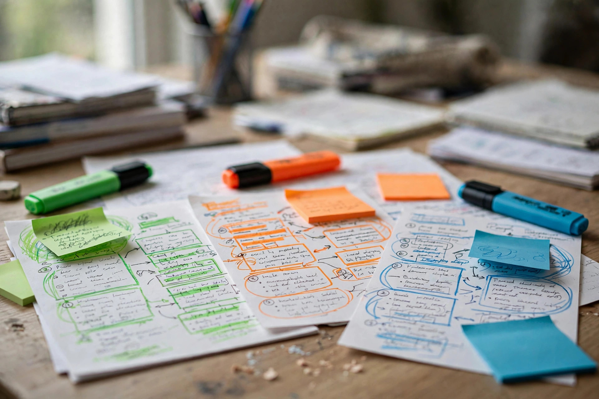

Ask any PPSC or FPSC topper which section felt easiest on exam day, and a surprising number will say Pakistan Studies. Not because it's light — there's a mountain of dates, names and constitutional articles — but because the questions come from a small, stubborn set of facts that repeat year after year. Once you've seen the pattern, this section stops being memorisation and starts being free marks.
This guide maps exactly what to revise, in what order, and how to make it stick — plus a 10-day revision plan that fits around your other subjects.
Why Pak Studies Carries Easy Marks
In a typical PPSC one paper exam, the General Ability portion draws a steady share of questions from Pakistan Studies — usually somewhere in the 10–15 question range of a 100-MCQ paper. FPSC screens even harder on Pakistan Affairs in posts where it's the core subject. Either way, the economics are excellent: a handful of well-known facts (independence dates, constitutional milestones, dams, national symbols) show up so reliably that an hour of smart revision here pays more per minute than almost any other topic.
The catch? Candidates prepare it last, rush through a guidebook the night before, and walk in confusing the 1940 Lahore Resolution with the 1946 Cabinet Mission. Examiners know this, and they love questions that punish shallow reading.
The Topic Map: Where the Marks Actually Come From
Pakistan Studies isn't one topic — it's six clusters. Think of them in this weight order:
- Pre-1947 history (highest weightage): the Pakistan movement — Lahore Resolution 1940, Cabinet Mission 1946, the 1945–46 elections, Partition events, key leaders and their roles.
- Constitutional history: the three constitutions (1956, 1962, 1973), major amendments, how the country swung between parliamentary and presidential systems.
- Geography of Pakistan: provinces and their capitals, major rivers and dams, mountain ranges, deserts, ports, borders and neighbouring countries.
- National symbols & culture: national anthem, flag, flower, animal, poet, the Minar-e-Pakistan, major archaeological sites like Mohenjo-Daro and Taxila.
- Economy & agriculture: major crops and their seasons, the Green Revolution, industry, currency and the State Bank's role.
- Post-1947 events & personalities: firsts (first president, first PM, first woman PM), wars, important treaties and recent milestones.
Notice the pattern: everything here is a fact with a hook — a date, a name, a place. That makes it perfectly suited to MCQ practice. Start your Pakistan Studies practice MCQs today and watch how quickly the patterns emerge.

The 7 Facts Examiners Never Stop Asking
These come up in some form in nearly every paper. If you know nothing else, know these cold:
- The Lahore Resolution was passed on 23 March 1940 at Minto Park, Lahore — the foundation of the Pakistan demand.
- Pakistan's independence was declared on 14 August 1947; the first Governor-General was Quaid-e-Azam Muhammad Ali Jinnah.
- The 1956, 1962 and 1973 constitutions — know which was parliamentary, which was presidential, and that the 1973 Constitution (parliamentary, federal) is the current one.
- The Indus, Jhelum, Chenab, Ravi, Beas and Sutlej — the six rivers, and the major dams: Tarbela (Indus), Mangla (Jhelum), Warsak (Kabul).
- Mohenjo-Daro (Sindh) and Taxila — the two archaeological sites examiners recycle endlessly.
- The national anthem was composed by Ahmed G. Chagla, lyrics by Hafeez Jalandhari; the national poet is Allama Iqbal.
- K2 (8,611 m) is Pakistan's highest peak; the Thar is the largest desert.
Memory Tricks That Actually Work for Dates and Names
Pak Studies fails most candidates at the recall stage, not the learning stage. Three techniques fix this:
- Timeline chaining: don't memorise dates alone — string events into a story. "1906 Muslim League → 1940 Lahore Resolution → 1946 elections → 1947 independence" is one sentence that carries four answers.
- Pair the opposites: 1956 (first, parliamentary) vs 1962 (second, presidential) vs 1973 (third, parliamentary). Three constitutions, one pattern.
- Map anchoring: study geography on an actual map, not a list. Tarbela sits on the Indus in Khyber Pakhtunkhwa — once you see it, the dam-river-province triplet sticks as one fact instead of three.
Then test yourself in MCQ form the same day. Facts you get wrong in a quiz move to the front of tomorrow's revision; facts you get right can wait. That feedback loop is exactly what the free mock test simulator is built for — timed, with negative marking, so your scores mean something.
The 10-Day Pak Studies Revision Plan
You don't need a month. One focused cycle, about 45 minutes a day:
- Days 1–3 — Pakistan movement: 1857 onward in broad strokes, then zoom into 1930–1947: Lahore Resolution, elections, Cabinet Mission, Partition. Finish each day with 50 topic MCQs.
- Days 4–5 — Constitutional history: the three constitutions, major amendments, and the Martial Law periods. Make a one-page comparison table by hand.
- Days 6–7 — Geography: provinces, rivers, dams, mountain ranges, deserts, borders. Revise from a map, then solve geography-only MCQs.
- Day 8 — Symbols, culture & heritage: anthem, flag, national poet, Mohenjo-Daro, Taxila, major festivals and languages.
- Day 9 — Economy & post-1947 firsts: crops, industry, State Bank, first president/PM/woman PM, major wars and treaties.
- Day 10 — Full sweep: one mixed mock of 50 Pak Studies MCQs under time. Anything below 70% sends that cluster back into tomorrow's hour.
Pair this with the PPSC exam page for post-specific papers and the full subjects list when you're ready to rotate to the next subject.
4 Mistakes That Drain Pak Studies Marks
- Reading instead of quizzing. Pak Studies is fact-dense — reading gives you the illusion of knowing. Only MCQs reveal what stuck.
- Learning dates without events. "1940" alone is useless; "1940 = Lahore Resolution at Minto Park" is an answer.
- Skipping geography. Map questions are pure recall and take seconds to answer — they're the cheapest marks in the paper.
- Mixing up the constitutions. Examiners deliberately pair 1956/1962/1973 in one question. That one-page comparison table from Day 4–5 prevents the mix-up.
- Pak Studies delivers 10–15 reliable marks in PPSC papers — revise it by cluster, heaviest first (pre-1947 history → constitutions → geography).
- Memorise facts as hooks: event + date + place as one unit, not scattered fragments.
- Quiz every topic the same day in MCQ form; re-test misses the next morning.
- Geography is the cheapest marks in the section — revise from a map, not a list.
Frequently Asked Questions
How many days are enough to revise Pakistan Studies for PPSC?
Ten focused days at 45 minutes a day is enough if you follow the cluster order above and quiz yourself in MCQ form daily. Cramming a guidebook the night before is the most common way candidates lose these marks.
Which Pak Studies topics have the highest weightage?
Pre-1947 history (the Pakistan movement, Lahore Resolution, Partition events) and constitutional history (the 1956, 1962 and 1973 constitutions) carry the most questions, followed by geography — rivers, dams and mountain ranges.
How do I stop mixing up dates and constitutions?
Use timeline chaining (string events into one story), pair the opposites (1956 parliamentary vs 1962 presidential vs 1973 parliamentary), and hand-write a one-page comparison table — writing beats re-reading for recall.
Where can I practice Pakistan Studies MCQs for free?
On this site — MCQs Tayyari offers hundreds of free Pakistan Studies MCQs with answers, plus a full exam simulator with timer and negative marking so your practice scores reflect the real paper.
Start practicing — free, no login needed
185,203+ MCQs · Pakistan Studies subject practice · real exam simulator with timer & negative marking